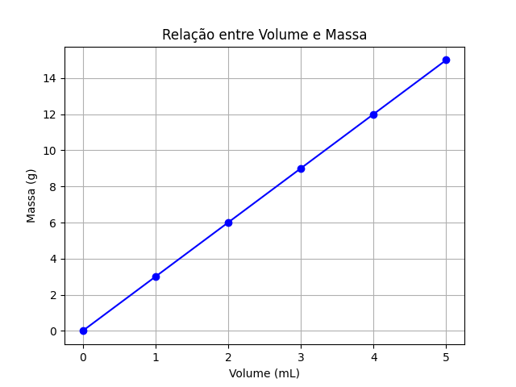

Resumos das Aulas de Física
Pré-física
Sugestões sobre como estudar
Aqui estão algumas técnicas para estudar de forma mais eficiente.
- Método Feynman
Baseia-se no fato de que ensinar é uma das melhores formas de aprender.
🌐 Método Feynman de estudo - Blog PUC Minas
- Repetição Espaçada
Baseada no conceito da Curva do Esquecimento.
🌐 Repetição espaçada no aprendizado - Blog Duolingo
- Técnica do Pomodoro
Nosso cérebro tem um limite de tempo de concentração e precisa de pequenos intervalos de descanso.
Grandezas e Unidades de Medida
As grandezas físicas são conceitos aos quais podemos atribuir valores numéricos, enquanto que as unidades de medida são padrões de medida para cada grandeza correspondente.
Na tabela abaixo estão algumas grandezas físicas com correspondentes unidades de medida:
| Grandeza | Unidade (Nome) | Unidade (Símbolo) |
|---|---|---|
| Massa | Quilograma, Grama | kg, g |
| Volume | Litro, Mili-litro | L, mL |
| Densidade | Grama por mili-litro | g/mL |
| Comprimento | Metro, Centímetro | m, cm |
| Tempo | Hora, Segundo | h, s |
Equações
As equações na física são relações matemáticas entre grandezas. Considere os seguintes dados de uma substância hipotética:
| Massa (g) | Volume (mL) | Densidade (g/mL) |
|---|---|---|
| 3,0 | 1,0 | 3,0 |
| 6,0 | 2,0 | 3,0 |
| \( ? \) | 2,5 | 3,0 |
| 5,0 | \( ? \) | 3,0 |
| 15,0 | 3,0 | \( ? \) |
A densidade é calculada dividindo a massa pelo volume. Essa relação pode ser escrita como:
\begin{equation} d = \frac{m}{V} \end{equation}Onde:
- \( m \) = massa
- \( V \) = volume
- \( d \) = densidade
Com dois valores conhecidos, podemos calcular o terceiro.
Gráficos
Gráficos são ferramentas visuais importantes para representar dados e relações entre grandezas físicas. Eles ajudam a identificar padrões e tendências.
(Conteúdo a ser adicionado.)
Como exemplo, os dados abaixo,
| Volume (mL) | Massa (g) |
|---|---|
| 1,0 | 3,0 |
| 2,0 | 6,0 |
| 3,0 | 9,0 |
| 4,0 | 12,0 |
| 5,0 | 15,0 |
Podem ser representados pela figura

Figure 1: Gráfico que relaciona os valores de massa e volume da tabela anterior.
© 2025 IFAM - Campus Eirunepé. Todos os direitos reservados.